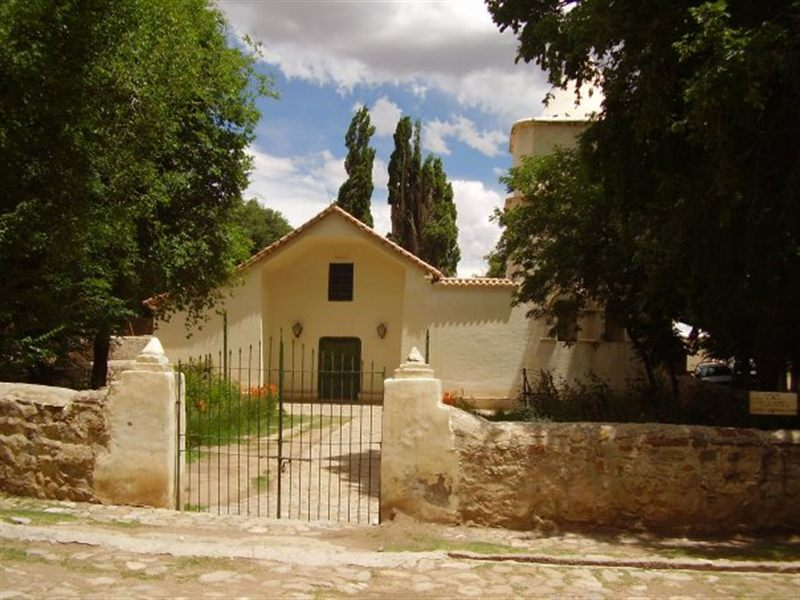
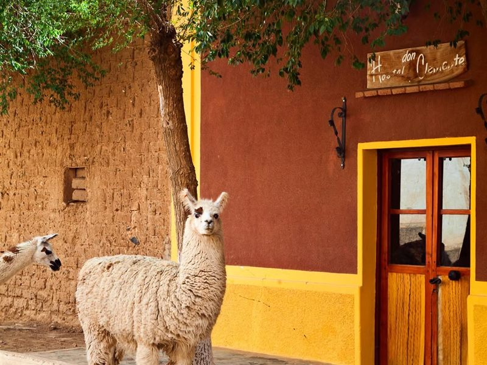
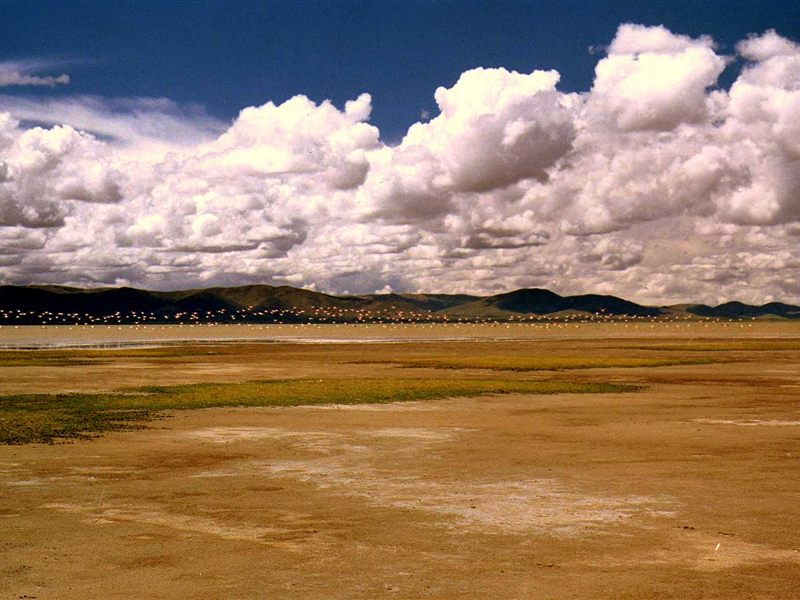

📍 16 km

Yavi
Pueblo colonial con la Iglesia de San Francisco de Asís, famosa por su altar bañado en oro. También tiene un museo histórico en la antigua casa del Marqués de Tojo y, cerca, la Laguna Colorada.
La ciudad más al norte de Argentina, puerta de entrada a la Puna jujeña y frontera con Bolivia. Si estás pensando en mudarte o invertir acá, esto es lo que te vas a encontrar.
Una ciudad de frontera, a pie de la Puna, con su propia historia ferroviaria y comercial.
El corazón de la ciudad, ideal para recorrer a pie y arrancar cualquier visita.
El templo más destacado de La Quiaca, a pocas cuadras de la plaza principal.
Comercio local activo, con productos de la Puna y de Bolivia, cruzando la frontera.
Cabecera del ramal C del Ferrocarril Belgrano, que llegó a conectar con Bolivia por un puente ferroviario. Dejó de operar en la década del '90 y hoy es parte de la historia de la ciudad.
El cruce La Quiaca–Villazón, a pocas cuadras del centro, con aduana y migraciones. La postal más conocida de la ciudad.
Días soleados y noches frías, típicos de la Puna. Cielos despejados casi todo el año.
Tres destinos clásicos de la Puna, ideales para una escapada de un día.

Pueblo colonial con la Iglesia de San Francisco de Asís, famosa por su altar bañado en oro. También tiene un museo histórico en la antigua casa del Marqués de Tojo y, cerca, la Laguna Colorada.

Uno de los pueblos más altos y aislados de la Puna, con una economía basada en la agricultura y la ganadería de ovejas y llamas. Conserva una iglesia antigua y esa quietud típica del altiplano.

Monumento Natural y humedal protegido (sitio Ramsar) a 3.400–3.800 msnm, hogar de tres especies de flamencos que en temporada alta llegan a más de 50.000 ejemplares y tiñen la laguna de rosa.
Conocé las propiedades disponibles en La Quiaca, San Salvador de Jujuy y alrededores, y empezá tu vida en uno de los rincones más singulares del norte argentino.
Fotos: Mercado Municipal (Mx. Granger, CC0) · Estación La Quiaca (galio, CC BY-SA 2.0) · Puente Internacional (Leandro Kibisz, CC BY-SA 2.5) · Yavi (The gambler, CC BY-SA 4.0) · Laguna de los Pozuelos (rodoluca, CC BY-SA 3.0) · Santa Catalina (Julio C Ledesma, CC BY 4.0) — vía Wikimedia Commons.